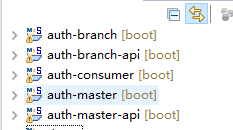
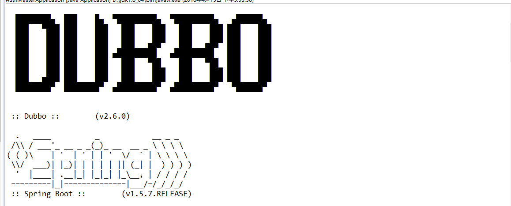
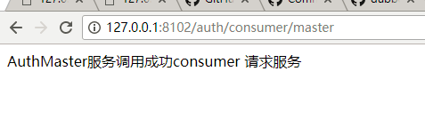
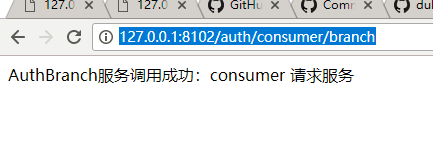

把接口契约、服务实现和调用方拆开，是理解 RPC 工程结构的第一步。
历史工程档案 · Dubbo 2.xPROJECT STRUCTURE
项目拆分与整体流程
原文使用 2018 年的 com.alibaba Dubbo Starter 与相关包名。后续 Apache Dubbo 的依赖、注解和配置项可能不同，迁移时需要按项目版本核对。
因项目需要，搭建了一个新的springBoot项目，开发过程中，原定的基于 http 提供给其他项目的接口，必须使用dubbo服务提供rpc接口，无奈之下只能去网上找demo，发现现在使用最多的是通过配置xml和bean来整合，没有通过简单的注解和yml的配置来实现的，寻找之下，发现已经有dubbo- spring-boot -starter的jar，而且是2.0版本的，去官网查看api后整理出一个demo，希望为后来的同学提供帮助。官网地址：https://github.com/alibaba/dubbo-spring-boot-starter/
下面来说流程：
首先创建5个项目，两个项目是接口，两个项目是接口的实现及服务提供者，最后一个是测试用的服务使用者

DEPENDENCY
引入 Starter 与接口依赖
<!-- Spring Boot Dubbo 依赖 -->
<dependency>
<groupId>com.alibaba.spring.boot</groupId>
<artifactId>dubbo-spring-boot-starter</artifactId>
<version>2.0.0</version>
</dependency>
<!--zookeeper依赖 -->
<dependency>
<groupId>org.apache.zookeeper</groupId>
<artifactId>zookeeper</artifactId>
<version>3.4.8</version>
</dependency>
<dependency>
<groupId>com.101tec</groupId>
<artifactId>zkclient</artifactId>
<version>0.10</version>
</dependency>接口的实现类项目和服务使用者需要单独引入api接口的pom配置
YAML CONFIG
提供者与消费者配置
服务提供者的配置，注意scan扫描的位置，凡是要配置接口实现类的包都要扫描到
#spring.application.name=dubbo-provider
server:
port: 8100
#应用名称
spring:
dubbo:
application:
#注册在注册中心的名称，唯一标识，请勿重复
id: auth-branch
name: auth-branch
#注册中心地址，zookeeper集群，启动输出可以看见链接了多个
#单zookeeper服务：zookeeper://127.0.0.1:2181
registry:
address: zookeeper://127.0.0.1:2181?backup=127.0.0.1:2180,127.0.0.1:2182
#暴露服务方式
protocol:
id: dubbo
#默认名称，勿修改
name: dubbo
#暴露服务端口 （默认是20880，修改端口，不同的服务提供者端口不能重复）
port: 20881
status : server
#调用dubbo组建扫描的项目路径
scan: com.demo.branch.impl服务调用者的配置，一样scan扫描的位置是需要调用服务类的位置
#spring.application.name=dubbo-consumer
server:
context-path: /auth
port: 8102
#应用名称
spring:
dubbo:
application:
name: auth-consumer
#注册中心地址
protocol:
name: dubbo
registry:
address: zookeeper://127.0.0.1:2181?backup=127.0.0.1:2180,127.0.0.1:2182
#调用dubbo组建扫描的项目路径
scan: com.demo.controller
#telnet端口
qos:
port: 22223
#检查服务是否可用默认为true，不可用时抛出异常，阻止spring初始化，为方便部署，可以改成false
consumer:
check: false服务调用者不需要配置端口，因为他会根据注解自动寻找对应的端口
接下来在所有的项目入口都加上dubbo的注解
import org.springframework.boot.SpringApplication;
import org.springframework.boot.autoconfigure.SpringBootApplication;
import org.springframework.web.bind.annotation.CrossOrigin;
import com.alibaba.dubbo.spring.boot.annotation.EnableDubboConfiguration;
@CrossOrigin//允许跨越访问
@SpringBootApplication//springBoot项目入口
@EnableDubboConfiguration
public class AuthConsumerApplication {
public static void main(String[] args) {
SpringApplication.run(AuthConsumerApplication.class, args);
}
}SERVICE PROVIDER
定义接口与服务提供者
public interface BranchService {
public String branchTest(String count);
}在auth-master和auth-branch项目中各自配置服务提供者接口的实现类
import org.springframework.stereotype.Component;
import com.alibaba.dubbo.config.annotation.Service;
import com.demo.branch.service.BranchService;
/**
* rpc服务接口实现类
*/
@Service(interfaceClass = BranchService.class) //dubbo的service，注入接口
@Component //spring注解，扫描包
public class AuthBranchImpl implements BranchService {
@Override
public String branchTest(String count) {
String re = "AuthBranch服务调用成功："+count;
System.out.println(re);
return re;
}
}两个服务提供者都按照这种方式注入，注意：service是引入dubbo的而不是 spring 的
阿里的service注解还提供了其他参数，包括版本号等：
SERVICE CONSUMER
配置服务消费者
import org.springframework.web.bind.annotation.RequestMapping;
import org.springframework.web.bind.annotation.RestController;
import com.alibaba.dubbo.config.annotation.Reference;
import com.demo.branch.service.BranchService;
import com.demo.master.service.MasterService;
@RestController
@RequestMapping("/consumer")
public class ConsumerController {
static final String branchUrl = "dubbo://127.0.0.1:20881";
static final String masterUrl = "dubbo://127.0.0.1:20880";
@Reference(url = branchUrl)
BranchService branchService;
@Reference(url = masterUrl)
MasterService masterService;
@RequestMapping("branch")
public String branch() {
System.out.println("-----dubbo服务测试方法-----同时调用多个dubbo服务测试-----");
String re = branchService.branchTest("consumer 请求服务");
return re;
}
@RequestMapping("master")
public String master() {
System.out.println("-----dubbo服务测试方法-----同时调用多个dubbo服务测试-----");
String re = masterService.masterTest("consumer 请求服务");
return re;
}
}RUN & VERIFY
启动顺序与调用验证

看到这个图标 说明dubbo服务开始启动，看控制台打印的信息
然后分别调用两个接口


返回成功，基础的项目搭建完毕。
示例项目地址：https://gitee.com/xzxWord/SpringBootIntegrateDubbo
有问题的同学请留言，希望能一起跨过各种的坑，谢谢
MIGRATION & SOURCE
迁移说明与原始来源
本文由本地保存的 CSDN 正文迁移而来，保留原始实践步骤、代码与截图，并对标题层级、段落和版本提示进行了重新整理。
《Spring Boot 注解整合 Dubbo 与 ZooKeeper》，原发布于 2018-04-13。示例环境与结论应结合文章中的版本背景阅读。
查看 CSDN 原文 ↗从接口契约开始构建可维护的 RPC 服务